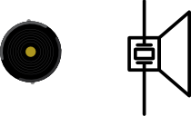
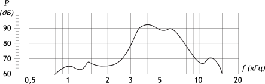
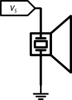
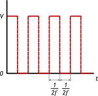
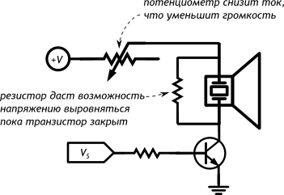
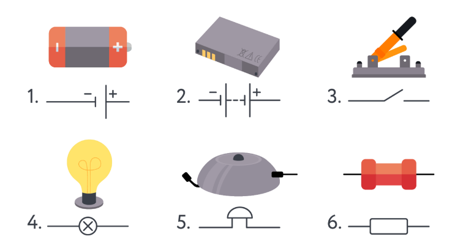

<!DOCTYPE html>
<html lang="ru">
<head>
    <meta charset="UTF-8">
    <title>Document</title>
    <link rel="stylesheet" href="css/normalize.css">
    <link rel="stylesheet" href="css/styles.css">
</head>
<body>
    <aside class='teory' id='scrollbar2'><h1 class='h1-another'>Пьезодинамик</h1><p class='simple-text'>Пьезоизлучатель звука (англ. buzzer) переводит переменное напряжение в колебание мембраны, которая в свою очередь создаёт звуковую волну. Электроакустический компонент, который используется в системах воспроизведения звука и ультразвуковых приборах.</p><p class='simple-text'>Иначе говоря, пьезодинамик — это конденсатор, который звучит при зарядке и разрядке.</p><h1 class='small-topic-2'>Основные характеристики</h1><p class='simple-text'><b>Амплитудно-частотная характеристика (АЧХ)</b> определяет громкость звука в зависимости от частоты управляющего сигнала, который и определяет высоту звучащей ноты.</p><p class='simple-text'>Идеальная АЧХ — это прямая, т.е. одинаковая громкость вне зависимости от частоты. Но мир не идеален и разные виды излучателей имеют разные отклонения от идеала.</p><h1 class='small-topic-2'>Подключение напрямую</h1><p class='simple-text'>Пьезодинамик потребляет всего пару мА, поэтому можно смело подключать его прямо к микроконтроллеру.</p><p class='simple-text'>Для звучания нужно подавать на динамик квадратную волну. Какой частоты будет волна, такой частоты будет и звук.</p><h1 class='small-topic-2'>Подключение с регулировкой громкости</h1></aside>
    <!-- <h1 class='h1-another'>Принципиальные схемы</h1>
    <p class='simple-text'>Красиво, но громоздко и непрактично:</p>
    <h1 class='small-topic-2'>Рисованная схема</h1>
     -->
<!-- <aside class='teory' id='scrollbar2'></aside> -->

</body>
</html>